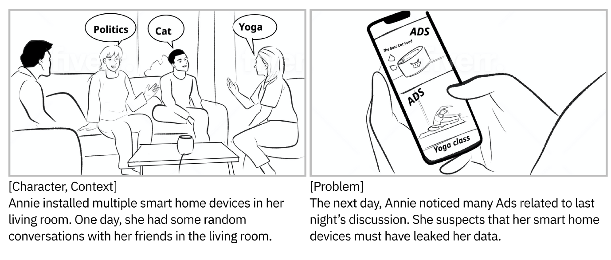

Project PPB: Exploring the Needs of Users for Supporting Privacy-protective Behavior in Smart Homes

In this paper, we studied people's smart home privacy-protective behaviors (SH-PPBs), to gain a better understanding of their privacy management do's and don'ts in this context. We first surveyed 159 participants and elicited 33 unique SH-PPB practices, revealing that users heavily rely on ad hoc approaches at the physical layer. We also characterized the types of privacy concerns users wanted to address through SH-PPBs, the reasons preventing users from doing SH-PPBs, and privacy features they wished they had to support SH-PPBs. We then storyboarded 11 privacy protection concepts to explore opportunities to better support users' needs, and asked another 227 participants to criticize and rank these design concepts. Among the 11 concepts, Privacy Diagnostics, which is similar to security diagnostics in anti-virus software, was far preferred over the rest.
Citation
- Exploring the Needs of Users for Supporting Privacy-protective Behavior in Smart Homes, Haojian Jin, Boyuan Guo, Rituparna Roychoudhury, Yaxing Yao, Swarun Kumar, Yuvraj Agarwal and Jason Hong, CHI 2022 PAPER